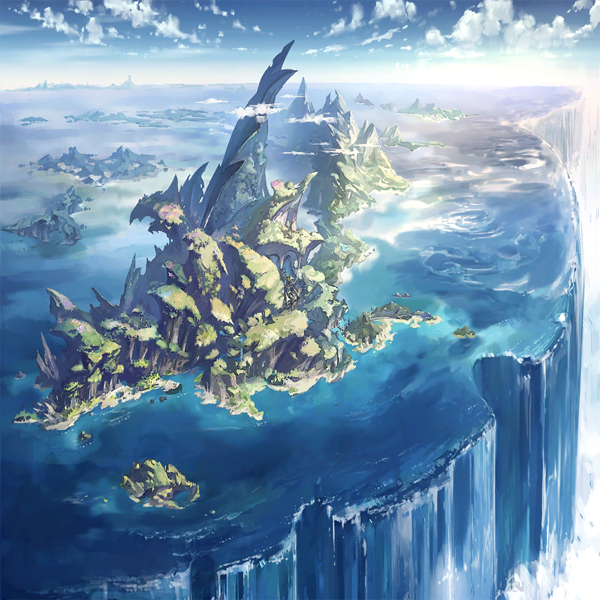

|
|
 |
| シュメイア |
…新しい竜体の作成？
突然なうえに妙な頼みだね、それ |
| シュメイア |
まあ、たしかに貴方の体は旧式だ
古き時代の神秘、
って言えば聞こえはいいけど |
| シュメイア |
もう、あちこちガタがきているようだしね
そろそろ乗り換えってことかい？
ああ、記憶のほうは任せて |
| シュメイア |
今ちょうど、その辺りの研究をしてるんだ
異なるふたつの体の自我を、ひとつに
合一する手段っていうか…え、違う？ |
| シュメイア |
…人間の子供に、新しい体を？
ああ、できなくはないけれど… |
| シュメイア |
でも、人の魂と竜の魂は違うモノだ
同じように動く保証はないし、
真っ当に生きられる確証もない |
| シュメイア |
それでも？
へえ…いや、面白い |
| シュメイア |
もちろん請け負うとも
なにせほかならぬ――
大先輩からの頼みだからね |
| メルビレイ |
うむ、任せたぞ |
 |
| |
それは、くだらぬ思いつきだった |
| |
一度死んだ者を、救う
もう一度肉体を与え、
生き、笑い、呼吸できるようにする |
| |
無駄な行為である
命とはいずれ終わるもの |
| |
ここで、この娘を救っても
世界は何も変わらない
悲劇は決して覆らない。それでも |
| |
救いたいと、そう願ったワシは――
どこかで壊れてしまったのだろう |
| メルビレイ |
生きるがよい、人の子よ
その為に必要なものはすべてすべて、
このワシが与えよう |
| |
例え世界が、それを望まぬのだとしても |
|
|  |
| メルビレイ |
…ん、ん～… |
| メルビレイ |
夢を、見ていたようじゃな |
| メルビレイ |
まったく、あの分からず屋め… |
 |
|
| メルビレイ |
ヒトの寝所に乗り込んだ挙句に
いきなり火を放つとか、
常識なさすぎでは？ |
| メルビレイ |
…とはいえ、
今のワシにアレと戦う余力はない |
| メルビレイ |
今は、逃げの一手じゃのう |
| メルビレイ |
………… |
| メルビレイ |
ところで、ここ…どこじゃろうな？ |
 |
 |
 |
| メサルティム |
………… |
| リル |
………… |
| サリア |
一応、聞いておきましょうか
キッチンのこの惨状は一体…？ |
| リル |
あのね、
わたしがおなか空いたなーって思ってね？ |
| メサルティム |
料理ができないと言うので、
私が代わりに見様見真似で、
何か作ろうとなったのだが |
| メサルティム |
調理器具とは、
意外と脆いものなのだな？ |
| サリア |
使い方が！ 違います！
包丁で卵割るとかアホですか…!?
その上鍋を水も入れずに火にかけるとか！ |
| メサルティム |
むぅ… |
| サリア |
まったくもう…
今何か用意しますから、
座って待っててください |
| リル |
はーい |
| メサルティム |
だが、今日はずいぶんと遅かったな |
| メサルティム |
ここ数日、生活をともにして思ったが…
規則正しいお前が、
ここまで遅くに帰るのは珍しい |
| サリア |
最近、周辺の群島で
謎の火災が起きているんです |
| サリア |
そのせいで、この島の物流も滞っていて
今日はその対策会議だったのです |
| メサルティム |
火事？
この、四方を水で囲まれた世界でか |
| サリア |
なんでも、“消えない火”なのだそうで |
| メサルティム |
あり得るのか？ そんなものが |
| サリア |
普通はあり得ないですね
ただ… |
| リル |
？ |
| サリア |
竜の力…
世界の理を曲げるその力であれば、
あり得るのではないかと |
| メサルティム |
この層の竜種と言えば―― |
 |
|
| メサルティム |
この地に火を放つ者は、
居ないように思えるが |
| サリア |
なのでおそらく、
外来の竜が悪さをしていると思われます |
| サリア |
そのせいで、
竜と親交を持ったラオン船長が
槍玉にあがってまして |
| リル |
わたしたちは、やってないよ？ |
| サリア |
もちろん、私たちはわかっています
けどほかの、あなたたちを知らない人々から
すると、竜は竜なのです |
| メサルティム |
まあ、そうなるか |
| メサルティム |
それで、この島を出て行けと
そういう話か？ |
| サリア |
いえ、むしろその逆で… |
| ラオン |
だったら、竜の力を借りりゃあいい
あいつらの持ち込んだ災いなら、
あいつら自身に解決してもらうのさ！ |
| サリア |
調子の良い男が、
調子の良いことを言いまして |
| サリア |
明朝、私たちの船で
各島を巡ることになりました… |
| リル |
またお船で旅？ たのしみー |
| メサルティム |
ふむ、タダ飯食らいも
そろそろ飽きたところだ
それに―― |
| メサルティム |
人界を守ると、そう約束もした
私でよければ力を貸そう |
|
| メサルティム |
――と、引き受けたはいいが… |
| メサルティム |
その男も一緒か |
| ラオン |
船長だからね!?
俺がいないと船、動かないから！ |
| クェンス |
そうだったか…？ |

ワギナオ |
クェンス、言うな |
| リル |
ざふぃりすは…まだ帰ってない？ |
ワギナオ |
そのようだ
この島に着いてから、もう一週間も経つが |
| クェンス |
ま、竜の尺度は俺らとは違うからな
これくらいはまだ誤差だ |
| クェンス |
うちの師匠なんか、
“ちょっと”とか言って一年くらい
平気で家空けやがるからな… |
| メサルティム |
…それは、
お前の師がズボラなだけではないのか |
| クェンス |
それは…そうかもな…
あんま他人への配慮とか
しないヒトだったからな… |
| リル |
くぇんす君…おくち悪い… |
| クェンス |
言い出したのはその女だけどな!? |
| ラオン |
えー、話は聞いているな諸君？ |
| ラオン |
ここ最近、
色んな島で火災の報告が相次いでる
しかもこれが、なかなか消えないと来た |
| ラオン |
今はまだ、被害は
人の手が入っていない場所が主だが… |
| ラオン |
これが穀倉地とかで起こると、
俺たちの明日の食い扶持が消えかねない |
| ラオン |
なんで、ちょっくら巡回して
怪しい奴らをしょっ引こうって話だ |
ワギナオ |
人為的…いや、竜の所業だと
そう考えていいんだったな？ |
| ラオン |
ま、その可能性が高いって話だ
少なくとも自然の出火じゃあない |
| ラオン |
だからとりあえず、
一番厄介な想定をしておこう
って話になった |
| クェンス |
ま、確かにこの世界で
竜は最大の脅威だろうな |
| ラオン |
…って訳なんだが
戦えそうかい？ メサルティム |
| メサルティム |
誰にものを言っている
すでに私は、二柱の竜を撃退してるぞ |
| ラオン |
おっと、そうだった！
んじゃ、問題はないな |
| ラオン |
よし、野郎ども！ 出航だ!! |
| 船員たち |
アイサー!! |
| ラオン |
あと、この騒ぎの影響で
海の魔物どもも騒いでるから！ |
| ラオン |
勢い余って乗り込んできたら
その時は対処よろしくな!! |
| クェンス |
だから、そういうことは先に言え…！ |